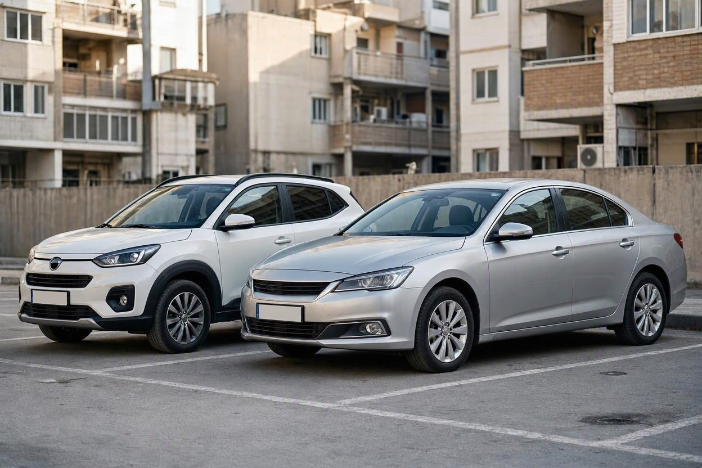
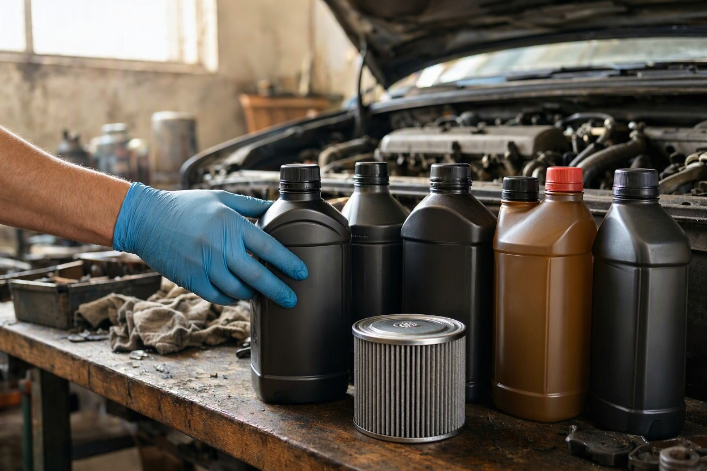
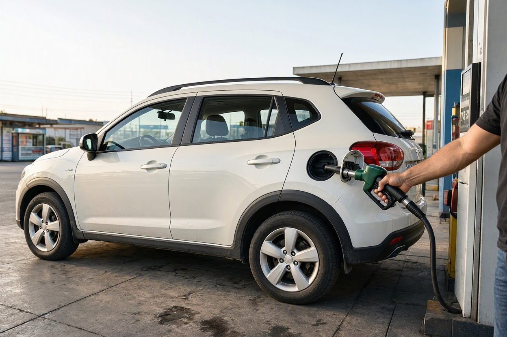
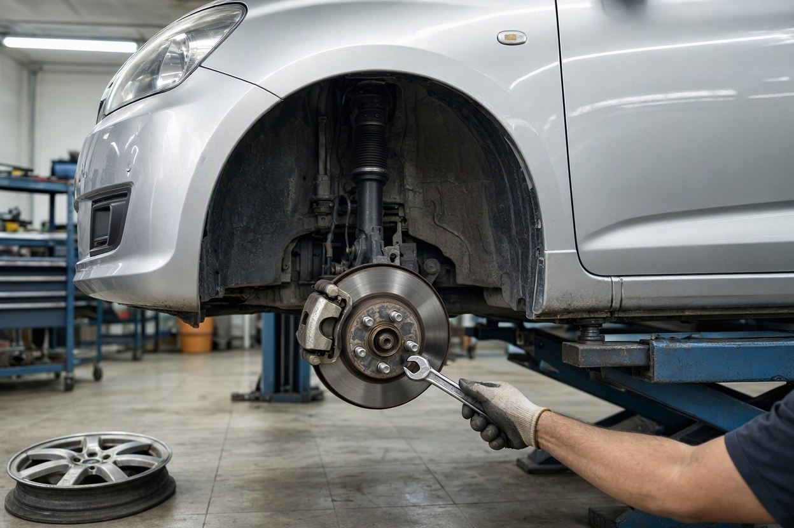

کم استهلاک ترین خودروهای خارجی در ایران کدامند؟ مقایسه هزینه نگهداری با داده ۱۴۰۵
فرض کنید بین یک امویام ۳۱۵ و یک کیا ریو دست دوم مردد هستید. سرویس پایه ۳۱۵ طبق قیمتهای مهر ۱۴۰۵ ارزانتر است، اما وقتی نوبت تسمه تایم برسد، هزینه ۳۱۵ بیش از دو برابر ریو درمیآید. همین تفاوتهاست که خودروی خارجی کمخرج را از خودروی پرخرج جدا میکند.
کم استهلاک ترین خودروهای خارجی را نمیشود فقط با کشور سازنده یا شهرت برند شناخت. در این مقاله که تیم کارماچک برای خرید مطمئنتر خودرو آماده کرده، هزینه سرویس پایه، تسمه تایم، اجرت تعمیرات اصلی و مصرف سوخت اعلامی خودروهای خارجی رایج در بازار ایران را کنار هم گذاشتهایم و در هر بخش، خودروی ایرانی را هم بهعنوان مبنای مقایسه آوردهایم.
بر اساس قیمتهای مهر ۱۴۰۵، کم استهلاک ترین خودروهای خارجی در ایران از نظر سرویس و مصرف، مدلهای کوچک امویام مثل ۱۱۰، ۳۱۵ و X22 و پس از آنها جک J4 و آریزو ۵ هستند. سرویس پایه این گروه بین ۳.۲ تا ۶.۲ میلیون تومان است، در حالی که تیبا حدود ۳.۴۶ میلیون هزینه دارد. در قطعات دورهای، کیا ریو ارزانترین تسمه تایم را دارد.
خلاصه در یک دقیقه
- سرویس پایه خودروهای خارجی در مهر ۱۴۰۵ از ۳.۲ میلیون تومان برای امویام ۱۱۰ شروع میشود و برای هایما S7 به ۷.۵ میلیون میرسد.
- تعویض تسمه تایم کیا ریو حدود ۴.۹۵ میلیون و امویام ۳۱۵ حدود ۱۱.۷ میلیون تومان برآورد شده است.
- اجرت تعمیر موتور امویام بین ۱۰ تا ۲۵ میلیون و چانگان بین ۳۰ تا ۵۰ میلیون تومان گزارش شده است، بدون قیمت قطعه.
- خودروهای چینی ۲۸ درصد و وارداتیهای غیرچینی حدود ۷ درصد بازار خودروهای کارکرده را دارند؛ این سهم روی نقدشوندگی اثر مستقیم دارد.
- تقریباً هیچ خودروی خارجی در سرویس پایه به ارزانی خودروهای اقتصادی ایرانی نمیرسد؛ مزیت خارجیها بیشتر در مصرف و کیفیت قطعه است.
استهلاک خودروی خارجی با ایرانی چه فرقی دارد؟
در هر دو گروه، استهلاک یعنی مجموع هزینهای که خودرو در طول استفاده روی دست مالک میگذارد: سرویس دورهای، قطعات بزرگ، تعمیرات و افت قیمت هنگام فروش. اما در خودروی خارجی دو عامل وزن بیشتری پیدا میکنند.
- زنجیره تأمین قطعه: خودرویی که مونتاژکار داخلی و شبکه نمایندگی فعال دارد، قطعهاش در دسترستر از خودرویی است که فقط از طریق بازار آزاد تأمین میشود.
- فناوری موتور و گیربکس: موتور توربو، روغن با گرید بالاتر میخواهد و گیربکسهای اتوماتیک پیشرفتهتر، تعمیر گرانتری دارند.
برای همین در این مقاله، علاوه بر هزینهها، کنار هر عدد یک خودروی ایرانی رایج هم آوردهایم تا فاصله واقعی روشن شود.
هزینه سرویس پایه خودروهای خارجی در مهر ۱۴۰۵
جدول زیر بر اساس گزارش نبض قیمت در یکم مهر ۱۴۰۵ تنظیم شده و شامل روغن، فیلتر روغن و اجرت تعویض است. ردیف آخر برای مقایسه با یک خودروی اقتصادی ایرانی آمده است.

| خودرو | حجم و گرید روغن | هزینه تقریبی سرویس پایه (تومان) |
|---|---|---|
| امویام ۱۱۰ | ۲.۸ لیتر، 10W40 | ۳,۲۰۰,۰۰۰ |
| امویام ۳۱۵ | ۳.۷ لیتر، 10W40 | ۴,۲۰۰,۰۰۰ |
| امویام X22 | ۴ لیتر، 5W40 | ۵,۸۰۰,۰۰۰ |
| جک J4 | حدود ۳.۸ لیتر، 10W40 | ۵,۸۰۰,۰۰۰ |
| امویام X33 و آریزو ۵ | حدود ۴ تا ۴.۳ لیتر | ۶,۲۰۰,۰۰۰ |
| جک S3 | ۴.۲ لیتر، 5W40 | ۶,۳۰۰,۰۰۰ |
| تیگو ۵ و هایما S5 | ۴.۲ تا ۴.۵ لیتر، 5W40 | ۶,۴۰۰,۰۰۰ |
| تیگو ۷ | ۴.۵ لیتر، 5W40 | ۶,۵۰۰,۰۰۰ |
| فیدلیتی پرایم و دیگنیتی پرایم | ۴.۵ تا ۴.۷ لیتر، 5W40 | ۶,۸۰۰,۰۰۰ |
| جک S5، KMC T8، فیدلیتی پرستیژ | حدود ۵ لیتر، 5W40 | ۷,۲۰۰,۰۰۰ |
| هایما S7 | ۵.۲ لیتر، 5W40 | ۷,۵۰۰,۰۰۰ |
| مبنای مقایسه: تیبا (ایرانی) | ۳.۷ لیتر | ۳,۴۶۰,۰۰۰ |
همین گزارش برای مدلهای هیوندای و کیا اجرت سرویس را حدود ۲ میلیون تومان و جمع سرویس پایه را حدود ۷ تا ۸ میلیون تومان ذکر کرده است. نکته جدول روشن است: فقط امویام ۱۱۰ در سرویس پایه از تیبا ارزانتر است و امویام ۳۱۵ نزدیکترین خودروی خارجی به آن است. بیشتر خودروهای چینی جدیدتر بهدلیل روغن 5W40 و حجم بیشتر، تقریباً دو برابر یک خودروی اقتصادی ایرانی هزینه سرویس دارند.
هزینه تسمه تایم خودروهای خارجی؛ تفاوت های بزرگ
تسمه تایم از قطعاتی است که دیر یا زود باید عوض شود و جاماندنش میتواند به موتور آسیب جدی بزند. در خودروهای خارجی، اختلاف این هزینه بسیار بیشتر از سرویس پایه است.
| خودرو | اجرت (تومان) | قیمت نمونه کیت (تومان) | جمع تقریبی (تومان) |
|---|---|---|---|
| کیا ریو | ۱,۶۹۴,۰۰۰ | ۳,۲۵۸,۰۰۰ | ۴,۹۵۲,۰۰۰ |
| تیگو ۵ | ۵,۰۸۲,۰۰۰ | ۴,۴۹۴,۰۰۰ | ۹,۵۷۶,۰۰۰ |
| جک J5 | ۵,۰۸۲,۰۰۰ | ۶,۲۵۰,۰۰۰ | ۱۱,۳۳۲,۰۰۰ |
| امویام ۳۱۵ | ۴,۸۴۰,۰۰۰ | ۶,۸۶۰,۰۰۰ | ۱۱,۷۰۰,۰۰۰ |
| مبنای مقایسه: تیبا (ایرانی) | ۱,۶۹۴,۰۰۰ | ۲,۹۰۰,۰۰۰ | ۴,۵۹۴,۰۰۰ |
این اعداد از گزارش نبض قیمت در دوم مهر ۱۴۰۵ گرفته و به نزدیکترین هزار تومان گرد شدهاند. همان گزارش برای آریزو ۵ و جک S5 اجرت ۵.۰۸ میلیون، برای برلیانس H330 اجرت ۴.۸۴ میلیون و برای هیوندای اکسنت مونتاژی و کیا سراتو اجرت ۶.۰۵ میلیون تومان ذکر کرده، بدون قیمت کیت.
نتیجه عملی این جدول: کیا ریو در تسمه تایم تقریباً همهزینه تیباست، اما امویام ۳۱۵ با وجود سرویس پایه ارزان، در این قطعه حدود ۲.۵ برابر تیبا خرج دارد. بخش بزرگی از این تفاوت، اجرت است که در خودروهای چینی تقریباً سه برابر خودروهای سادهتر محاسبه میشود.
اجرت تعمیرات اصلی خودروهای چینی به تفکیک برند
سرویس و تسمه تایم هزینههای قابل پیشبینیاند. تعمیرات اصلی موتور، گیربکس و جلوبندی کمتر رخ میدهند، اما وقتی رخ دهند فاصله برندها خیلی زیاد است. پدال در سال ۱۴۰۴ این بازهها را فقط برای اجرت، بدون قیمت قطعه، گزارش کرده است:
| برند | تعمیر موتور (میلیون تومان) | تعمیر گیربکس (میلیون تومان) | تعمیر جلوبندی (میلیون تومان) |
|---|---|---|---|
| امویام | ۱۰ تا ۲۵ | ۵ تا ۱۰ | ۵ تا ۱۰ |
| لیفان | ۱۵ تا ۲۵ | ۵ تا ۲۰ | ۵ تا ۱۸ |
| جیلی | ۱۸ تا ۴۰ | ۸ تا ۲۰ | ۵ تا ۲۰ |
| برلیانس | ۲۰ تا ۴۰ | ۱۰ تا ۲۰ | ۵ تا ۲۰ |
| چری | ۲۰ تا ۲۵ | ۱۰ تا ۴۰ | ۱۰ تا ۲۰ |
| جک | ۲۰ تا ۴۰ | ۸ تا ۳۰ | ۱۰ تا ۴۰ |
| هایما | ۲۰ تا ۵۰ | ۱۰ تا ۴۰ | ۱۰ تا ۴۰ |
| چانگان | ۳۰ تا ۵۰ | ۱۰ تا ۵۰ | ۱۰ تا ۲۰ |
امویام در هر سه ستون پایینترین بازه را دارد. پدال تأکید کرده که برای این خودروها نرخنامه رسمی اتحادیه منتشر نشده و این اعداد تقریبیاند. بازه بالای گیربکس چری و هایما معمولاً به گیربکسهای اتوماتیک پیشرفتهتر مربوط است؛ اگر خودروی موردنظرتان گیربکس دوکلاچه یا CVT دارد، این ردیف را جدی بگیرید.
پیش از خرید خودروی خارجی، وضعیت موتور و گیربکس را بسنجید
در خودروهای خارجی، یک ایراد پنهان گیربکس یا موتور میتواند از چند سال سرویس دورهای گرانتر تمام شود.
رزرو کارشناسی خودرومصرف سوخت اعلامی خودروهای خارجی
ارقام زیر مصرف ترکیبی اعلامی سازنده یا مونتاژکار است. مصرف واقعی در ترافیک شهری بیشتر است، اما مقایسه نسبی مدلها را ممکن میکند.

| خودرو | مصرف ترکیبی اعلامی (لیتر در ۱۰۰ کیلومتر) |
|---|---|
| امویام X22 دستی | ۵.۹ |
| امویام X22 اتوماتیک | ۶.۱ |
| جک J4 | ۶.۲ |
| تیگو ۷ (موتور ۱.۵ توربو، دوکلاچه) | ۶.۷ |
| آریزو ۵ توربو | ۶.۹ |
| تیگو ۷ پرو | ۶.۹ |
| امویام X22 پرو | ۷.۱ |
| جک S3 | ۷.۶ |
| هایما S7 توربو | ۸.۶ |
| مبنای مقایسه: تیبا (ایرانی) | ۶.۹۵ |
اینجا خودروهای خارجی برتری دارند. امویام X22 و جک J4 روی کاغذ کمتر از تیبا مصرف میکنند و تیگو ۷ با وجود ابعاد بزرگتر، عددی نزدیک به آن اعلام کرده است. در مقابل، هایما S7 با ۸.۶ لیتر، پرمصرفترین مدل این فهرست است.
رتبه بندی کم خرج ترین ماشین های خارجی در بازار ایران
با کنار هم گذاشتن چهار شاخص بالا، کمخرجترین ماشینهای خارجی را میتوان در چهار گروه دید. این رتبهبندی فقط هزینه را میسنجد، نه ایمنی، امکانات یا کیفیت رانندگی.
۱. ام وی ام ۱۱۰، ۳۱۵ و X22
ارزانترین سرویس پایه میان خودروهای خارجی (۳.۲ تا ۵.۸ میلیون)، پایینترین بازه اجرت تعمیر و مصرف اعلامی ۵.۹ تا ۶.۱ لیتر برای X22. نقطه ضعف این گروه تسمه تایم ۳۱۵ است که حدود ۱۱.۷ میلیون تومان برآورد شده؛ این هزینه را در بودجه ببینید.
۲. جک J4 و آریزو ۵
سرویس پایه ۵.۸ تا ۶.۲ میلیون و مصرف ۶.۲ تا ۶.۹ لیتر. این دو سدان برای کسی که خودروی خارجی بزرگتر از امویام کوچک میخواهد، تعادل خوبی میان هزینه و فضا دارند.
۳. تیگو ۵، تیگو ۷ و جک S3
سرویس پایه ۶.۳ تا ۶.۵ میلیون و مصرف ۶.۷ تا ۷.۶ لیتر. تیگو ۷ با گیربکس دوکلاچه مصرف خوبی دارد، اما بازه تعمیر گیربکس چری تا ۴۰ میلیون تومان اجرت گزارش شده است.
۴. هایما S7، فیدلیتی، دیگنیتی، جک S5 و KMC T8
سرویس پایه ۶.۸ تا ۷.۵ میلیون تومان، یعنی دو برابر یک خودروی اقتصادی ایرانی. هایما علاوه بر آن، مصرف ۸.۶ لیتر و یکی از بالاترین بازههای اجرت تعمیر را دارد. این خودروها لزوماً بد نیستند، اما کمخرج حساب نمیشوند.

خودروهای کره ای و ژاپنی کارکرده چقدر کم خرج هستند؟
داده قیمتی منتشرشده برای کرهایها و ژاپنیها کمتر از چینیهاست، اما چند عدد قابل اتکا وجود دارد. کیا ریو با تسمه تایم حدود ۴.۹۵ میلیون تومان، در این قطعه تقریباً همهزینه تیباست. در مقابل، اجرت سرویس پایه هیوندای و کیا حدود ۲ میلیون و جمع سرویس حدود ۷ تا ۸ میلیون تومان گزارش شده است.
نکته فنی مهم در این گروه، نوع سیستم تایمینگ است. بسیاری از موتورهای جدیدتر هیوندای مثل النترا و سوناتا زنجیر تایم دارند، در حالی که برخی مدلهای قدیمیتر تسمه دارند. زنجیر تایم معمولاً تعویض دورهای کوتاهمدت ندارد و این یعنی یک هزینه بزرگ کمتر. پیش از خرید، نوع موتور همان خودرو را از کارت یا شماره موتور بررسی کنید.
در خودروهای خارجی با سیستمهای الکترونیکی بیشتر، خواندن خطاهای ذخیرهشده پیش از خرید اهمیت بیشتری دارد. دیاگ خودرو قبل از خرید توضیح میدهد این بررسی چه چیزهایی را نشان میدهد.
نقدشوندگی خودروهای خارجی؛ بخش پنهان استهلاک
طبق گزارش سالانه ۱۴۰۴ پلتفرم خودرو۴۵، خودروهای چینی ۲۸ درصد و وارداتیهای غیرچینی حدود ۷ درصد بازار خودروهای کارکرده را در اختیار دارند و ۶۵ درصد سهم خودروهای داخلی است. همین گزارش نشان میدهد امویام X22 در آذربایجان شرقی پرمعاملهترین خودرو بوده است. این داده فقط مربوط به همان پلتفرم است، اما روند را نشان میدهد.
برای خریدار، معنای این عددها ساده است: خودروی چینی پرتعداد بازار خریدار بیشتری دارد و سریعتر فروخته میشود، در حالی که برای یک وارداتی غیرچینی کمتعداد، پیدا کردن خریدار ممکن است زمان بیشتری بگیرد. اثر کارکرد را هم فراموش نکنید؛ افت قیمت خودرو بر اساس کارکرد نشان میدهد کیلومتر بالا چطور روی ارزش فروش اثر میگذارد. برای برآورد ارزش یک خودروی مشخص هم قیمتگذاری خودرو کمک میکند.
خودروی خارجی کم استهلاک را چطور انتخاب کنیم؟
- مرحله اول:سرویس پایه و هزینه تسمه تایم مدل موردنظر را با جدولهای این مقاله و قیمت تعمیرگاه شهر خودتان مقایسه کنید.
- مرحله دوم:نوع گیربکس را مشخص کنید؛ گیربکس دستی یا اتوماتیک ساده معمولاً هزینه تعمیر کمتری از دوکلاچه و CVT دارد.
- مرحله سوم:از فعال بودن نمایندگی و در دسترس بودن قطعه آن مدل در شهرتان مطمئن شوید.
- مرحله چهارم:سابقه سرویس، تعویض تسمه تایم و تعمیرات گیربکس را بخواهید و وضعیت فنی و بدنه خودرو را پیش از معامله بررسی کنید.
کارماچک یک ارائهدهنده خدمات کارشناسی خودرو در ایران است. در کارشناسی فنی و بدنه خودرو، موتور، گیربکس، دیاگ و بدنه خودروهای داخلی و خارجی بررسی میشوند. فقط ایراد خودرو را شناسایی نمیکنیم؛ اثر آن روی هزینه تعمیر و ارزش واقعی معامله را هم مشخص میکنیم.
جمع بندی
با دادههای مهر ۱۴۰۵، کم استهلاک ترین خودروهای خارجی در ایران مدلهای کوچک امویام و پس از آنها جک J4 و آریزو ۵ هستند؛ کیا ریو هم در قطعات دورهای کمهزینه است. مدلهای بزرگتر و توربو مثل هایما S7، فیدلیتی و KMC T8 سرویسی دو برابر خودروی اقتصادی ایرانی دارند. خودروی خارجی معمولاً در مصرف از ایرانی بهتر است، اما در سرویس و تعمیر گرانتر؛ تصمیم را بر اساس مجموع این هزینهها و وضعیت همان خودرو بگیرید.
خودروی خارجی را با اطلاعات کامل بخرید
بررسی تخصصی نشان میدهد موتور، گیربکس و قطعات دورهای خودرو در چه وضعیتیاند و چه هزینهای در راه است.
ثبت درخواست کارشناسیسؤالات متداول
کمخرجترین ماشین خارجی در ایران کدام است؟
بر اساس قیمتهای مهر ۱۴۰۵، امویام ۱۱۰ با سرویس پایه حدود ۳.۲ میلیون و امویام ۳۱۵ با حدود ۴.۲ میلیون تومان، ارزانترین سرویس را میان خودروهای خارجی دارند. امویام در اجرت تعمیرات اصلی هم پایینترین بازه را دارد. البته تسمه تایم ۳۱۵ حدود ۱۱.۷ میلیون تومان برآورد شده که باید در محاسبه دیده شود.
آیا خودروی چینی از خودروی ایرانی کمخرجتر است؟
در سرویس و قطعات معمولاً نه. سرویس پایه بیشتر خودروهای چینی ۵.۸ تا ۷.۵ میلیون تومان است، در حالی که تیبا حدود ۳.۴۶ میلیون هزینه دارد. اما در مصرف سوخت، مدلهایی مثل امویام X22 و جک J4 روی کاغذ از تیبا کممصرفترند. نتیجه نهایی به میزان رانندگی شما بستگی دارد.
کممصرفترین خودروی خارجی بازار ایران کدام است؟
در میان مدلهایی که مصرف اعلامیشان را بررسی کردیم، امویام X22 دستی با ۵.۹ لیتر و نسخه اتوماتیک با ۶.۱ لیتر در هر صد کیلومتر کمترین عدد را دارند. جک J4 با ۶.۲ لیتر در رده بعدی است. مصرف واقعی در شهر بیشتر است و به سلامت موتور بستگی دارد.
چرا تسمه تایم خودروهای چینی گرانتر است؟
بخش بزرگی از اختلاف به اجرت برمیگردد. طبق گزارش مهر ۱۴۰۵، اجرت تعویض تسمه تایم تیبا و کیا ریو حدود ۱.۶۹ میلیون، اما امویام ۳۱۵ حدود ۴.۸۴ میلیون و تیگو ۵ حدود ۵.۰۸ میلیون تومان است. قیمت کیت هم در برخی مدلها مثل ۳۱۵ به حدود ۶.۸۶ میلیون میرسد.
خودروی خارجی با زنجیر تایم کمخرجتر است؟
زنجیر تایم معمولاً تعویض دورهای کوتاهمدت ندارد و یک هزینه بزرگ را حذف میکند. بسیاری از موتورهای جدیدتر هیوندای مثل النترا و سوناتا زنجیر دارند. اما زنجیر هم بیهزینه نیست؛ روغن نامناسب یا دیر تعویضشده میتواند به آن آسیب بزند. نوع سیستم را برای همان موتور بررسی کنید.
این اعداد چقدر قابل اعتماد هستند؟
اعداد سرویس و تسمه تایم از گزارشهای بازار در مهر ۱۴۰۵ و اجرت تعمیرات از گزارش ۱۴۰۴ پدال گرفته شدهاند. این ارقام برای مقایسه مدلها مناسباند، نه پیشفاکتور. قیمت قطعه به برند، شهر و تعمیرگاه بستگی دارد. پیش از هر تعمیر، فاکتور جداگانه قطعه و اجرت بخواهید.
منابع
- نبض قیمت: هزینه تعویض روغن در خودروهای مختلف (یکم مهر ۱۴۰۵)
- نبض قیمت: هزینه تعویض تسمه تایم خودرو (دوم مهر ۱۴۰۵)
- پدال: هزینه اجرت و تعمیرات خودروهای چینی در سال ۱۴۰۴
- خودرو۴۵: مشخصات فنی امویام X22
- باما: مشخصات فنی چری تیگو ۷
- ویکیشاپ: مصرف سوخت اعلامی خودروهای چینی
- زومیت: گزارش سالانه ۱۴۰۴ خودرو۴۵
- راهنمای تسمه تایم یا زنجیر تایم در خودروهای هیوندای